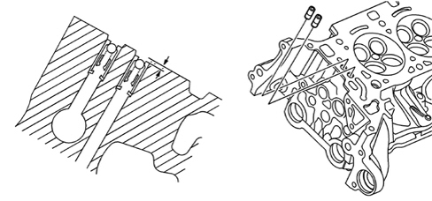

INTRODUCTION - CYLINDER HEAD(S)
- Path
- Descriptions > 10 ENGINE > 1016 CYLINDER HEAD/S > INTRODUCTION - CYLINDER HEAD(S)
- Kind
- system description
- Applies to
- engines: 3.2 JTS; all production periods
- Interactive page
- https://sloeber94.github.io/elrnDB-aBrrSpdr/en/#/946001161
Applies to: engines: 3.2 JTS; all production periods
Technical specifications
The cylinder heads are the monolith type made from aluminium alloy and support and house the timing system components, the intake and exhaust manifolds, the housings for the spark plugs, the housings for the injectors and determine the shape of the combustion chamber.
The intake manifold and combustion chamber assembly is designed to improve the air/fuel mixing process, guaranteeing the correct turbulence of the intake air with the formation of a homogenous mixture for stable and completel combustion and the formation of few pollutants.
The four valves per cylinder are fitted in the guides, operated by two camshafts by means of finger roller rocker arms supported by hydraulic tappets. The hydraulic tappets for the inlet valves and the exhaust valves are different heights and cannot therefore be swapped.
Each spark plug is protected by a sleeve fitted on the cylinder head which also housess the ignition coil.
The engine coolant temperature sensor is located on the left cylinder head.
The non return valves are located on the cylinder head in the oil ducts for the phase transformer actuators. The valves should be recessed 2 mm in relation to the plane of the head.
